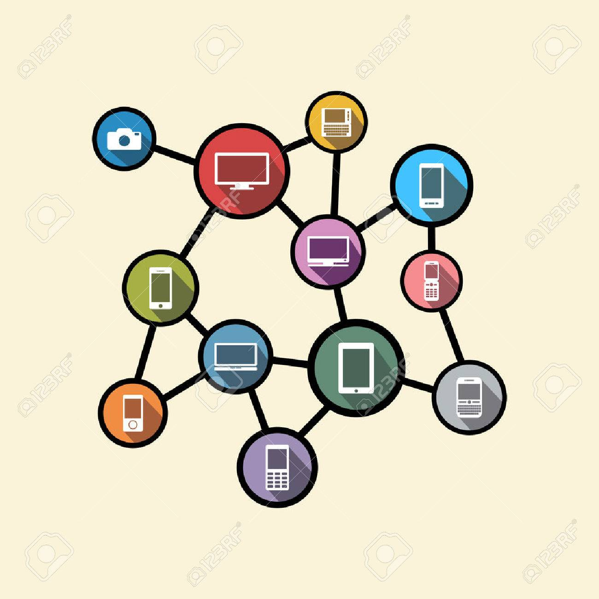
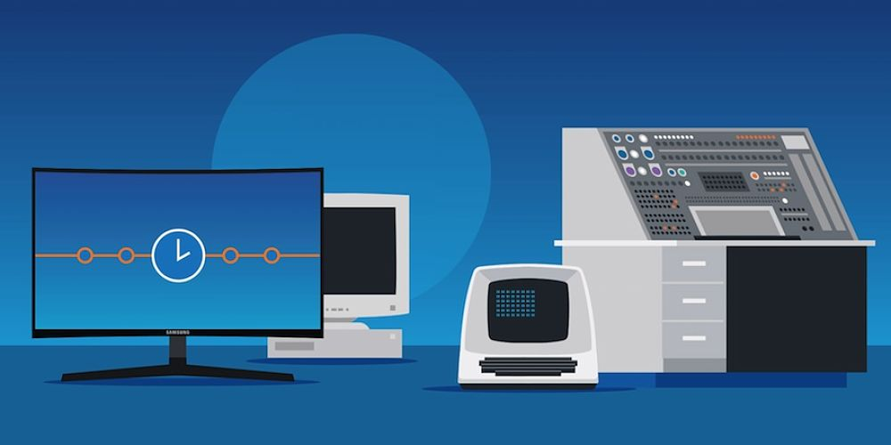

El avance de la tecnología ha permitido que la informática se integre de manera natural en la vida cotidiana, dando origen al concepto de cómputo ubicuo. Este paradigma se basa en la omnipresencia de dispositivos inteligentes conectados, permitiendo el acceso a la información y servicios en cualquier momento y lugar. En este contexto, las aplicaciones multimedia desempeñan un papel fundamental, facilitando la interacción entre usuarios y sistemas, mejorando la experiencia y optimizando diversos procesos. En este ensayo, se analizarán los principales tipos de aplicaciones multimedia en el cómputo ubicuo, sus beneficios y los desafíos que conllevan.
El cómputo ubicuo se refiere a la integración de la tecnología en el entorno cotidiano, permitiendo el acceso a la información en cualquier momento y lugar. Las aplicaciones multimedia en este contexto incluyen sistemas de aprendizaje ubicuo que utilizan dispositivos móviles y tecnologías emergentes para ofrecer experiencias educativas adaptativas y personalizadas.
Uno de los principales usos de las aplicaciones multimedia en el cómputo ubicuo se encuentra en los dispositivos inteligentes y el Internet de las Cosas (IoT). Tecnologías como los asistentes virtuales (Google Assistant, Alexa y Siri) integran interfaces multimodales que combinan voz, texto e imágenes para mejorar la comunicación con los usuarios. Estos sistemas permiten realizar tareas cotidianas como la gestión del hogar inteligente, la organización de agendas y la automatización de procesos industriales.
El cómputo ubicuo también ha impactado la movilidad y la navegación. Aplicaciones como Google Maps, Waze y Apple Maps integran multimedia avanzada, combinando imágenes satelitales, simulaciones en 3D y datos de tráfico en tiempo real para optimizar la experiencia del usuario. Estas plataformas no solo facilitan el desplazamiento en entornos urbanos, sino que también mejoran la accesibilidad para personas con discapacidades mediante funciones de guiado por voz y realidad aumentada.



El avance de la tecnología ha permitido que la informática se integre de manera natural en la vida cotidiana, dando origen al concepto de cómputo ubicuo. Este paradigma se basa en la omnipresencia de dispositivos inteligentes conectados, permitiendo el acceso a la información y servicios en cualquier momento y lugar. En este contexto, las aplicaciones multimedia desempeñan un papel fundamental, facilitando la interacción entre usuarios y sistemas, mejorando la experiencia y optimizando diversos procesos. En este ensayo, se analizarán los principales tipos de aplicaciones multimedia en el cómputo ubicuo, sus beneficios y los desafíos que conllevan.
El cómputo ubicuo se refiere a la integración de la tecnología en el entorno cotidiano, permitiendo el acceso a la información en cualquier momento y lugar. Las aplicaciones multimedia en este contexto incluyen sistemas de aprendizaje ubicuo que utilizan dispositivos móviles y tecnologías emergentes para ofrecer experiencias educativas adaptativas y personalizadas.
Otro aspecto fundamental del cómputo ubicuo es la personalización del contenido multimedia a través de la inteligencia artificial. Servicios de streaming como Netflix, Spotify y YouTube utilizan algoritmos avanzados para analizar las preferencias del usuario y recomendar contenido adaptado a sus intereses. Esta tecnología no solo mejora la experiencia del usuario, sino que también optimiza la distribución de información en tiempo real.
Sin embargo, a pesar de sus beneficios, la implementación de aplicaciones multimedia en el cómputo ubicuo enfrenta diversos desafíos. La seguridad y privacidad de los datos es una de las principales preocupaciones, ya que el constante flujo de información en dispositivos interconectados aumenta el riesgo de ataques cibernéticos. Además, la dependencia de la conectividad y la infraestructura tecnológica puede generar desigualdades en el acceso a estas herramientas, especialmente en regiones con menor desarrollo digital.